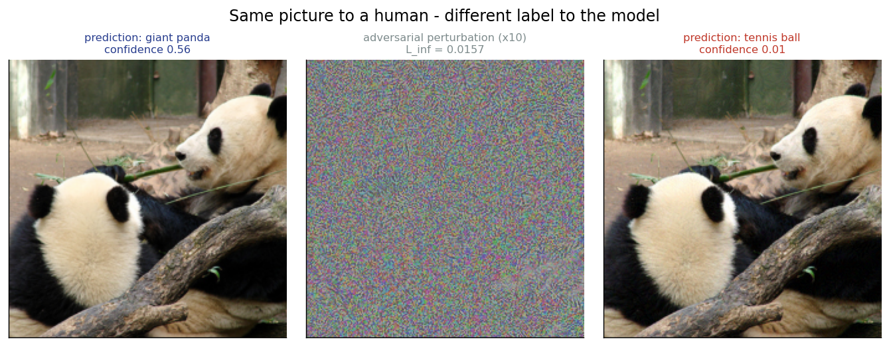

δ
Mini Research Problem
Do explanations
survive attacks?
Adversarial robustness of saliency-based interpretability
Lecture 07 · Robustness
✕
Lecture 09 · Interpretability
TL;DR
Invisible noise breaks the prediction and
its explanation — yet the break betrays the attack.
Experiment A
100%
of predictions flipped by PGD at an invisible budget
Experiment B
0.22
of the explanation survives the attack (top-10% IoU)
Experiment C
0.91
ROC-AUC detecting the attack from its own fragility
The set-up
Two ideas, one collision
Adversarial example
x′ = x + δ , ‖δ‖∞ ≤ ε
A perturbation too small for a human to see — yet the model misreads it with high confidence. (Lecture 07)
Saliency explanation
Grad-CAM · Integrated Gradients
A heatmap claiming these pixels drove the decision — shipped to make models trustworthy. (Lecture 09)
If δ is invisible, does the explanation still tell the truth — and can its failure warn us?
Literature
What this builds on
Attacks
- Szegedy et al. — adversarial examples2014 · arXiv:1312.6199
- Goodfellow et al. — FGSM2015 · arXiv:1412.6572
- Madry et al. — PGD + adv. training2018 · arXiv:1706.06083
- Carlini & Wagner — C&W attack2017 · arXiv:1608.04644
Explanations
- Simonyan et al. — gradient saliency2014 · arXiv:1312.6034
- Selvaraju et al. — Grad-CAM2017 · arXiv:1610.02391
- Sundararajan et al. — Integrated Gradients2017 · arXiv:1703.01365
Fragility & detection
- Ghorbani et al. — interpretation is fragile2019 · arXiv:1710.10547
- Kindermans et al. — (un)reliable saliency2019 · arXiv:1711.00867
- Xu et al. — feature squeezing2018 · arXiv:1704.01155
- Carlini & Wagner — detectors bypassed2017 · arXiv:1705.07263
Method
One image, three questions
Q1 · Robustness
Does the prediction flip?
Q2 · Interpretability
Does the saliency map move?
Q3 · Defense
Noise-instability detector
PyTorchtorchvision
Captum IGscikit-learn AUC
FGSM · PGD · Grad-CAM from scratch
Experiment A · Attacks
Invisible noise,
broken labels
- PGD climbs to 100% success as ε grows
- One-step FGSM stalls near 17%
- ε = 0 → 0% (sanity check)
Budget stays imperceptible — a few /255.
PGD (10 steps)FGSM (1 step)
Experiment B · Perception
Same picture. Different label.
Specimen · giant panda

A perturbation amplified ×10 just looks like static — at scale 1 it is invisible. The model is sure it sees something else entirely:
panda → tennis ball
flamingo → spider web 99.8%
retriever → malinois 99.6%
tabby → paper towel 92.7%
goldfish → digital clock
All at L∞ = 0.016 — the same imperceptible budget.
Experiment B · Explanations
The heatmap slides off the object
Grad-CAM for the original class — before vs. after an imperceptible attack. The explanation no longer points at the evidence.
Experiment B · Magnitude
How much
survives? Barely any.
- Similarity of clean vs. adversarial maps — 1.0 = unchanged
- Both methods collapse on region overlap
Only ~22% of the top-salient region survives
Grad-CAM IoU 0.22 · IG 0.23
Grad-CAMIntegrated Gradients
Experiment C · Defense
Fragility becomes a detector
cleanadversarial
Clean inputs barely move under noise (0.07); adversarial ones flip constantly (0.83).
Caveats
Honest limits
- Small sample — 12 images, one architecture
- White-box, L∞ attacks only; detector is non-adaptive
- Carlini & Wagner (2017): an adversary who knows the detector can craft noise-robust attacks
- A hurdle, not a cure.
Takeaway
Attacks succeed · explanations break ·
the break is detectable
0.22
explanation top-IoU retained
One pipeline links robustness (L07) and interpretability (L09). Next: ViT vs CNN · adaptive attacks · adversarial training.
∎
Reproduce
Code, demo & references
CODE github.com/jagrat97/adversarial-attacks-vs-explanations
DEMO ▶ youtu.be/<add-after-recording>
RUN python src/run_experiments.py
COURSE github.com/fatheral/ai-intro-course
Goodfellow ’15 (FGSM) · Madry ’18 (PGD) · Selvaraju ’17 (Grad-CAM) · Sundararajan ’17 (Integrated Gradients) · Ghorbani ’19 (fragile interpretations) · Xu ’18 (feature squeezing) · Carlini & Wagner ’17.
Thank you.